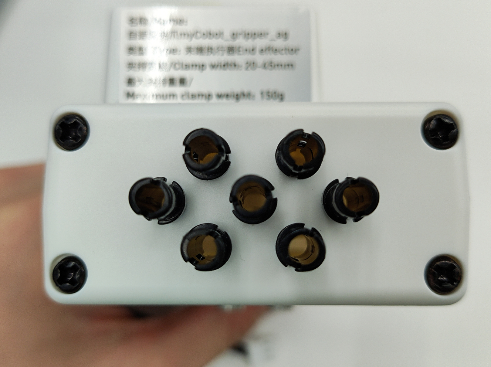
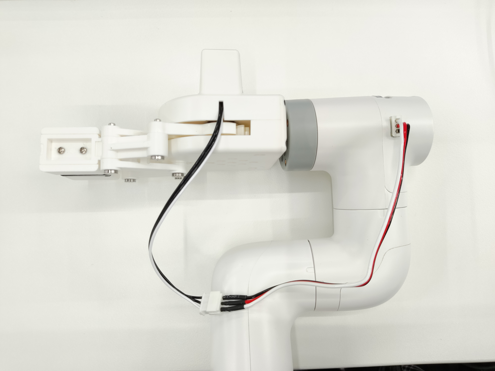

自适应夹爪
适配型号：myCobot 280、myPalletizer 260、mechArm 270
产品图示

规格说明：
| 名称 | mycobot280 自适应夹爪 |
|---|---|
| 型号 model | myCobot_gripperAg_white |
| 工艺 | ABS 注塑 |
| 颜色 | 白色 |
| 夹持范围 | 20-45mm |
| 最大夹持力 | 150g |
| 重复精度 | 1mm |
| 使用寿命 | 一年 |
| 驱动方式 | 电动 electric |
| 传动方式 | 齿轮＋连杆 |
| 尺寸 | 112×94×50mm |
| 重量 | 110g |
| 固定方式 | 乐高连接件 |
| 使用环境要求 | 常温常压 |
| 控制接口 | 串口控制 |
| 适用设备 | ER myCobot 280 系列 ，ER myPalletizer 260 系列， ER mechArm 270 系列 ，ER myBuddy 280 系列 |
自适应夹爪： 夹取物体使用
简介
- 夹爪是一种可以实现类似人手功能的机器人部件。其结构较复杂、抓取物体牢固、不易掉落、易操作的优点。夹爪套件包括夹爪配件和乐高科技件，通过可编程系统控制机械臂的末端执行器，实现物件的抓取、多点定位等功能。在所有的开发环境下都可以使用夹爪，如 ROS、Arduino、Roboflow 等。
工作原理
- 由电机驱动，夹爪的指面作直线往复运动来实现张开或闭合动作的，电动夹爪的加减速可控，对工件的冲击可以减至最小，定位点位可控，夹持可控。
适用物体
- 小方块
- 小球
- 长条物体
安装使用
检查配件包东西是否齐全：乐高连接件、带连接线的夹爪、连接线延长线

夹爪安装：
结构安装：
将乐高连接件插入夹爪预留的插孔中，根据需要可以选择两个不同方向进行安装：

将插好连接件的夹爪对准机械臂末端插孔插入:

- 电气连接 将延长线与夹爪连接：

插入机械臂控制接口:


编程开发：
使用 python 对夹爪进行编程开发
M5 版本：
from pymycobot.mycobot import MyCobot import time # 初始化一个MyCobot对象 mc = MyCobot("COM3", 115200) # 以下三种方式均可控制夹爪打开-关闭-打开 # 方式一： mc.set_gripper_state(0, 80) time.sleep(3) mc.set_gripper_state(1, 80) time.sleep(3) mc.set_gripper_state(0, 80) time.sleep(3) # 方式二： # mc.set_gripper_value(100, 80) # time.sleep(3) # mc.set_gripper_value(0, 80) # time.sleep(3) # mc.set_gripper_value(100, 80) # time.sleep(3) # 方式三： # mc.set_encoder(7, 2048) # time.sleep(3) # mc.set_encoder(7, 1500) # time.sleep(3) # mc.set_encoder(7, 2048) # time.sleep(3)Pi 版本：
from pymycobot.mycobot import MyCobot from pymycobot import PI_PORT, PI_BAUD # 当使用树莓派版本的mycobot时，可以引用这两个变量进行MyCobot初始化 import time # 初始化一个MyCobot对象 mc = MyCobot(PI_PORT, PI_BAUD) # 以下三种方式均可控制夹爪打开-关闭-打开 # 方式一： mc.set_gripper_state(0, 80) time.sleep(3) mc.set_gripper_state(1, 80) time.sleep(3) mc.set_gripper_state(0, 80) time.sleep(3) # 方式二： # mc.set_gripper_value(100, 80) # time.sleep(3) # mc.set_gripper_value(0, 80) # time.sleep(3) # mc.set_gripper_value(100, 80) # time.sleep(3) # 方式三： # mc.set_encoder(7, 2048) # time.sleep(3) # mc.set_encoder(7, 1500) # time.sleep(3) # mc.set_encoder(7, 2048) # time.sleep(3)
保存文件并关闭，返回命令行终端，输入：
python grip.py
可以看到夹爪打开-关闭-打开